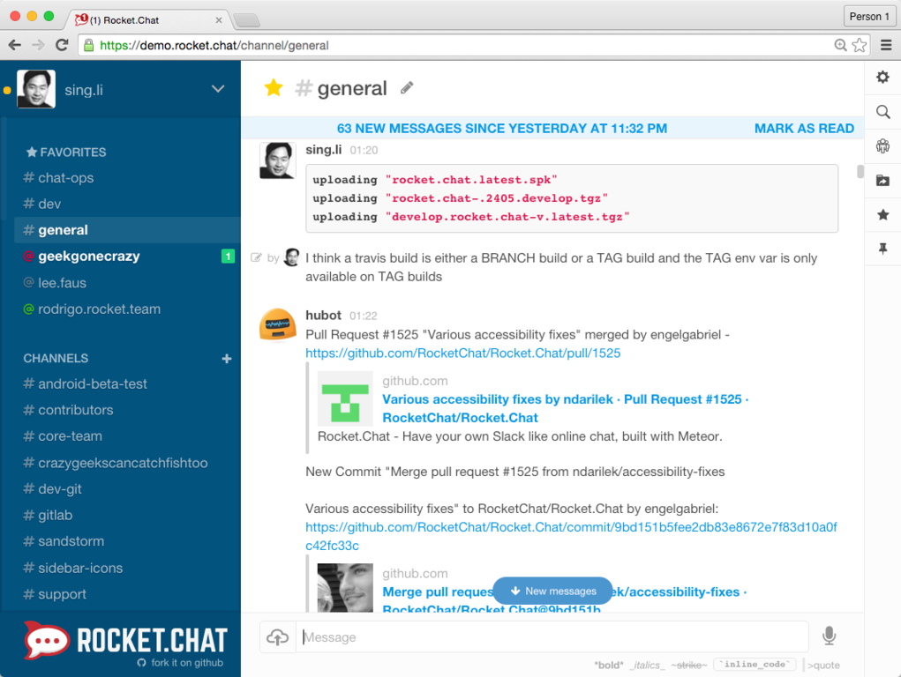

La evolución del chat, ha permitido el desarrollo de infinidad de tipos de chat. Estos son los más conocidos:
Chat IRC:
Basado en protocolo IRC.
Chat o sistema de mensajería instantánea:
Utilizados por las apps de comunicación como WhatsApp, Telegram, Facebook Messenger, etc.
Chat corporativo:
Entornos presentes en una página web, en los que un usuario puede comunicarse con responsables de la empresa.

Chatbot:
Entornos digitales donde un usuario se comunica con un robot con inteligencia artificial.
Videochat:
Término con el que se hace referencia a la comunicación audiovisual entre dos o más personas. También conocido como videollamada.